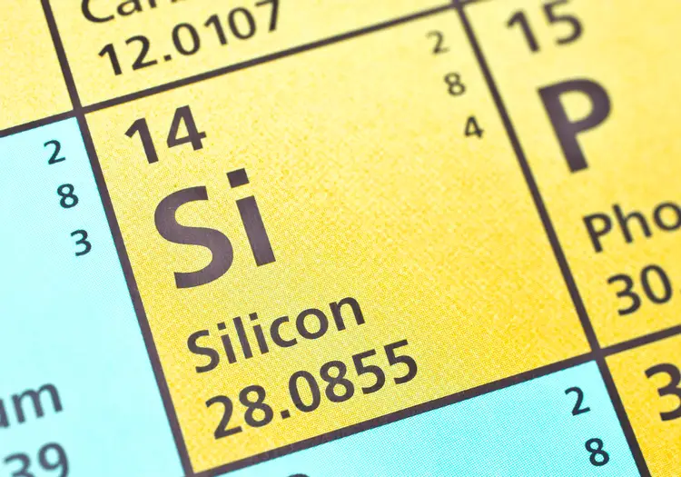

Кремний
Кре́мний (химический символ — Si, от лат. Silicium) — химический элемент 14-й группы (по устаревшей классификации — главной подгруппы четвёртой группы, IVA), третьего периода периодической системы химических элементов Д. И. Менделеева, с атомным номером 14. Простое вещество кремний представляется в различных модификациях. В аморфной форме — это коричневый порошок, в кристаллической — тёмно-серый, слегка блестящий полуметалл, являющийся вторым по распространённости химическим элементом в земной коре (после кислорода).

Широко распространённые на земле соединения кремния использовались человеком с каменного века; например, с глубокой древности до железного века кремень применяли для выделки каменных орудий труда. Переработка соединений кремния – изготовление стекла – началась в 4-м тыс. до н. э. в Древнем Египте. Элементарный кремний получен в 1824–1825 гг. Й. Берцелиусом при восстановлении фторида SiF4 металлическим калием. Новому элементу было дано названий «силиций» (от лат. silex – кремень; русское название «кремний», введённое в 1834 г. Г. И. Гессом, также происходит от слова «кремень»).
По распространённости в земной коре кремний – второй химический элемент (после кислорода): содержание кремния в литосфере составляет 29,5 % по массе. В свободном состоянии в природе не встречается. Важнейшие минералы, содержащие кремний, – алюмосиликаты и силикаты природные (амфиболы природные, полевые шпаты, слюды и др.), а также кремнезёма минералы (кварц и другие полиморфные модификации кремния диоксида).
Кремний относится к микроэлементам. Суточная потребность человека в кремнии 20–50 мг (элемент необходим для правильного роста костей и соединительных тканей). В организм человека кремний попадает с пищей, а также с вдыхаемым воздухом в виде пылеобразного SiO2. При длительном вдыхании пыли, содержащей свободный SiO2, возникает силикоз.

Кремний технической чистоты (95–98 %) получают восстановлением SiO2 углеродом или металлами. Высокочистый поликристаллический кремний получают восстановлением SiCl4 или SiHCl3 водородом при температуре 1000–1100 °С, термическим разложением SiI4 или SiH4; монокристаллический кремний высокой чистоты – зонной плавкой или по методу Чохральского. Объём мирового производства кремния 2850 тыс. т/год (2020).Кремний – основной материал микроэлектроники и полупроводниковых приборов; используется при изготовлении стёкол, прозрачных для ИК-излучения. Кремний является компонентом сплавов железа и цветных металлов (в малых концентрациях кремний повышает коррозионную стойкость и механическую прочность сплавов, улучшает их литейные свойства; в больших концентрациях может вызвать хрупкость); наибольшее значение имеют железные, медные и алюминиевые кремнийсодержащие сплавы. Кремний применяют в качестве исходного вещества для получения кремнийорганических соединений и силицидов.